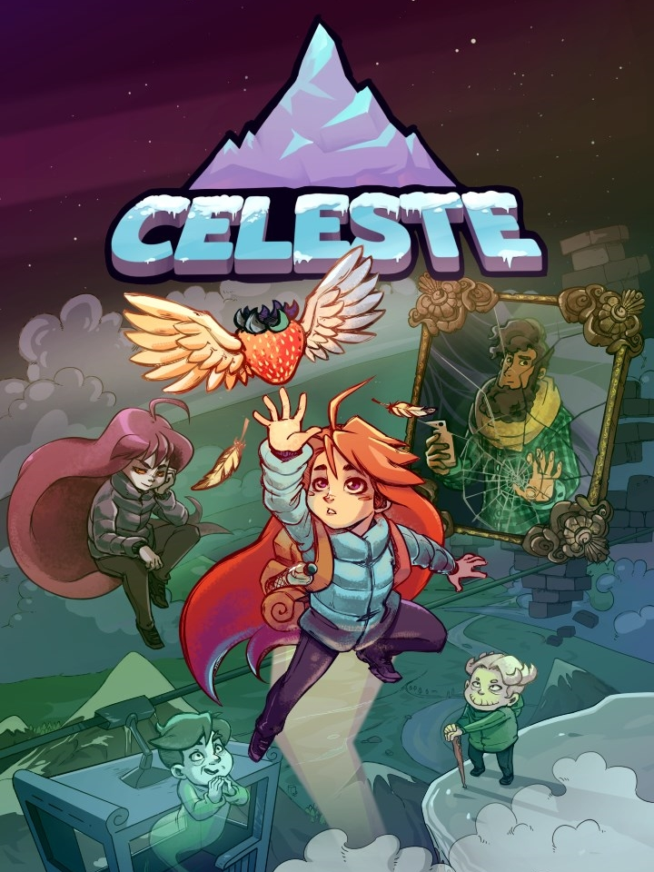

Celeste
Celeste
Details
|  | |
| Playtime | 1h 7m 0s |
| Last Activity | 23/07/2024 23:11:29 |
| Added | 16/09/2024 15:31:47 |
| Modified | 18/05/2025 2:12:41 |
| Completion Status | Played |
| Library | Steam |
| Source | Steam |
| Platform | PC (Windows) |
| Release Date | 25/01/2018 |
| Community Score | 87 |
| Critic Score | 91 |
| User Score | |
| Genre | Adventure Indie Platform |
| Developer | Extremely OK Games |
| Publisher | Maddy Makes Games |
| Feature | Single Player |
| Links | Steam Wikipedia Itch Epic Official Twitch YouTube Wikia |
| Tag | 2D 2D Platformer Action Adventure Atmospheric Cute Difficult Exploration Female Protagonist Great Soundtrack Indie LGBTQ+ Pixel Graphics Platformer Precision Platformer Puzzle Platformer Retro Side Scroller Singleplayer Story Rich |
Description
Help Madeline survive her inner demons on her journey to the top of Celeste Mountain, in this super-tight, hand-crafted platformer from the creators of multiplayer classic TowerFall.

This is it, Madeline. Just breathe. You can do this.


- A narrative-driven, single-player adventure like mom used to make, with a charming cast of characters and a touching story of self-discovery
- A massive mountain teeming with 700+ screens of hardcore platforming challenges and devious secrets
- Brutal B-side chapters to unlock, built for only the bravest mountaineers
- IGF “Excellence in Audio” finalist, with over 2 hours of original music led by dazzling live piano and catchy synth beats
- Pie
This is it, Madeline. Just breathe. You can do this.